-
麦秸行动简介
麦秸行动所属成员曾在参与支教活动中感悟中小学生对实践的缺乏与渴望，在日常校内了解到环卫、 后勤等人员的在互联网社会下的格格不入，在家乡感受到城乡真实交流的微薄与较大信息差。
习总书记也在“七大举措”中强调要加强社会主义精神文明建设。从加强农村思想道德建设， 开展形式多样的群众文化活动，推进农村移风易俗，注重农村青少年教育问题和精神文化生活等四个方面提出要求、作出部署。
在此前期经历、社会背景与政策下，麦秸行动应运而生。在本次项目中团队将顺应教育发展趋势，响应国家政策， 在以往微尘支教的基础上，再次创新，开展“农业知识双向教育”特色专题。
此次活动我们以组织，主持，管理人员以及参与者的身份开展农民与中小学生之间的双向教育。 我们为农民科普科技类产品和科技知识，帮助引导农民更好的利用科技的力量进行农业生产， 更好的跟上时代步伐，认识更多贴合生活的国家政策，感受乡村振兴的日渐重视，提高生活幸福感； 农民向中小学生传授农业生产，农村风光，农业生产模式等知识，并和中小学生分享农村特色小故事，小谚语等等。
公益服务对象
麦秸行动自创教学平台，凭借各方面优势，突破时间、空间以及阶层等限制， 联合中小学生、农民、大学生志愿者，在社会以及各高校的支持下为有需要的中小学生以及农民提供沟通学习的平台 以及人力和技术方面的支持。
核心服务模式
麦秸行动提供一对一、一对多的在线教育平台，该平台包括面向三方的基本服务，志愿者、中小学生、农民。通过平台， 志愿者可及时接收活动相关推送信息，完成后期报名，志愿活动过程中的记录以及与支教方的沟通； 中小学生版块包括课程预约、提问栏、结果展示栏、资源库等，另包括实践作业游戏版块供其在玩耍中巩固所学； 农民可实时沟通、寻求帮助，并准确接收感兴趣的公开政策方案。依托于平台强大的数据分析能力， 学生们可以在该平台内预约感兴趣的课程，也可以提出自己感兴趣的问题，由平台统计并安排志愿者与农民协商， 安排专门的课程或者以文字形式回答问题。 课后， 学生们还能在条件允许的情况下，自己种植一些农作物，并可以将成果上传至结果展示栏，并由农民们进行指导点评。 也可以利用资源库进行补充学习。
通过线上平台与线下招募相结合，我们可以更大范围地聚集到与我们有相同目标的志愿者们，并在志愿者的帮助下， 让农民通过我们的帮助向中小学生教授有关农业种植等的知识技巧。活动后，本团队预计与其他学院展开联动， 在活动过程中志愿者们会在与农民的交流过程中了解到当下农民在耕种时遇到的难以解决的问题， 通过收集到的一定数据，发挥理学院的地基作用，做好链接人，与城建学院、计算机学院等展开联动， 通过一定讨论，结合专业知识与各种现代化技术进行数据模拟，将较优数据与解决方法反馈给农民， 尽可能解决农民真实需求，以此促进农民增收或提高生活满足感，有利于乡村振兴。
麦秸行动将不断吸纳各方面人才，革新技术，不断提高本行动的可行性，提升社会知名度， 打造农村与城市、农民与学生沟通交流的最佳桥梁，让这两个似乎距离遥远的两方面碰撞出独特的火花。
团队背景
“麦秸行动”公益项目团队的原身是武汉科技大学理学院青年志愿者服务队， 于2009年成立，与地方居委会长期合作，开展了微尘行动、芝兰行动等志愿活动，陪伴留守儿童的成长， 为留守的孩子们带来陪伴和快乐，从学习和生活上给他们带来帮助。青年志愿者服务活动在社会中的发展越来越迅速， 为我们的社会产生了十分良好的影响，志愿服务正在成为新的社会风尚。越来越多的青年， 尤其是大学生加入到青年志愿者的行列中。微尘行动每周会从武汉科技大学学生中招募约50名志愿者， 在招募志愿者时也会要求志愿者对待活动有热情，善于表达，善于同孩子交流，同时对中小学知识掌握扎实， 具备组织学生参加活动的能力，优先考虑有支教志愿经历的志愿者。
其中核心成员参与组织管理的微尘行动开展至今已有12年，从刚刚起步到发展成熟， 获得各界人士的认可和赞扬，2012年获第六届湖北青年志愿者优秀项目奖，2013年在省文明办、 共青团湖北省委、省志愿者协会联合举办的“志愿有沃 荆楚志愿达人会”青年志愿者系列评选中脱颖而出， 荣获湖北省十佳志愿公益项目，2015年获“长江日报—最武汉”大学生志愿者优秀项目评选第二名。 目前“微尘”志愿者已经和武汉市多个社区达成了合作意向，联合了武汉科技大学全校志愿者推广该活动， 以自己的实际行动呼吁群众投身到志愿服务活动中，为留守儿童撑起一片蓝天，为社区困难群众提供志愿服务， 项目在社会上已经具有了一定的影响力。
一系列志愿经历，使本团队积累下了很多经验与人气。在新冠疫情期间，为响应防疫政策， 支教活动也由线下转为了线上，为麦秸行动积累了丰富的线上教学经验，是筑下项目地基浓墨重彩的一笔。
-
服务形式
农民教学生
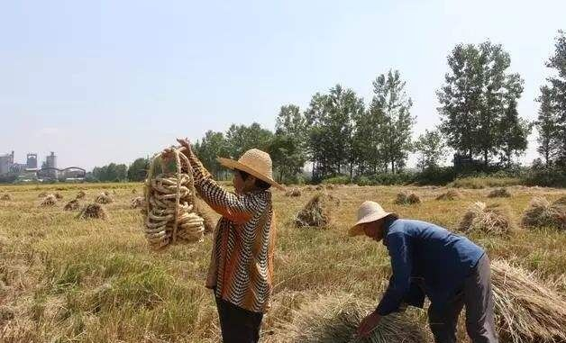 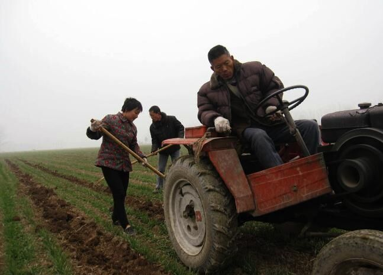 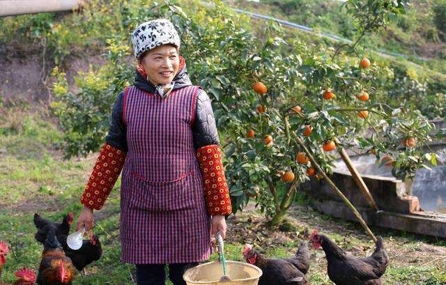1、农民向中小学生介绍农产品、畜牧、种植等广泛产业， 结合市面上已有的高新技术软件作为辅助手段从而增加教学实践感和趣味感， 帮助中小学生建立起对农村产业认知的大致框架；
2、通过照片摄影直播形式向中小学生展现真实农村美好风貌， 摆正更新中小学生对农村的印象，同时也为中小学生提供了观察祖国美好山河的机会， 我们还计划借助VR等技术开拓更好的展示方式；
3、通过照片摄影直播形式向中小学生展现真实农村美好风貌， 摆正更新中小学生对农村的印象，同时也为中小学生提供了观察祖国美好山河的机会， 我们还计划借助VR等技术开拓更好的展示方式；
4、中小学生学习一定劳动技能以及农民身上的劳动精神和品质；
5、上海疫情蔬菜短缺情形下隔离的人们纷纷居家种菜，人们意识到了种植技能的重要性， 通过这个项目农民可以教授种植知识普及种植解决一定疫情；
6、农民和小朋友分享小故事（包括农业生产小知识和知道的人生小故事或趣味小故事），小谚语等。
授课时：授课形式为实时远程直播教学，确保农民与中小学生之间互动性，同时我们还将运用附加软件作为辅助手段进行教学。
授课后：课程进行一段时间后志愿者组织中小学生上传自我实践作品分享给农民老师并接受中小学生有关创新想法， 志愿者还将定期组织志愿者亲自前往农民家中田地进行实地实践操作。
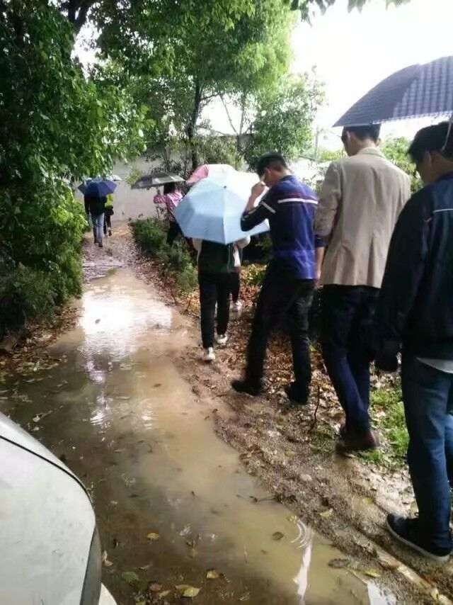志愿者教师——志愿者为农民科普新技术新科技新模式
1、志愿者帮助农民了解电子产品的使用， 并在农民教导小朋友农业知识时进一步帮助农民实践电子产品使用知识；
2、志愿者向农民科普现有农业高新技术和优秀生产模式， 帮助农民了解前沿农业生产模式，通过改进模式提高农业生产水平；
3、志愿者向农民普及新时代已发布的、与农民生活息息相关的利民政策， 通过利用城乡信息流通的时间差，为政策真正落实到农民、解决乡村真实需求提供帮助；
4、志愿者帮助农民更好的认知新时代，跟上新时代的步伐，并用青年的活力来感染农民。
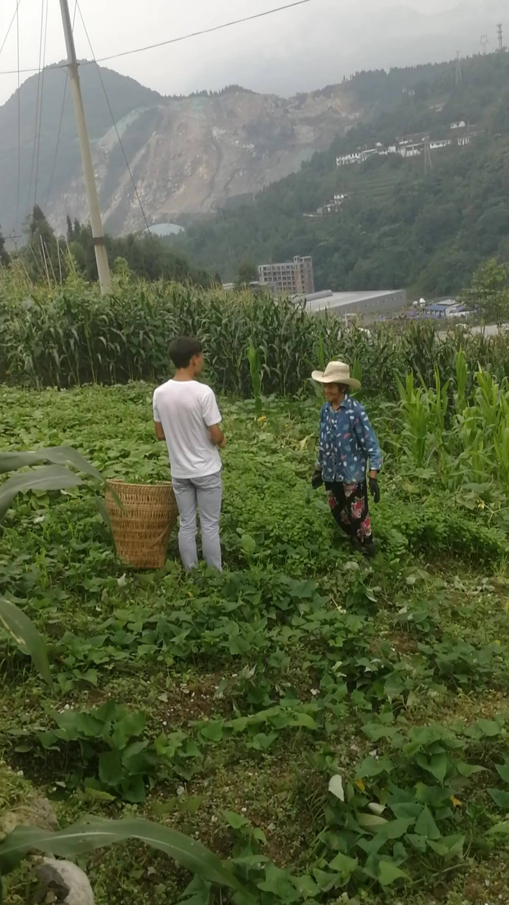 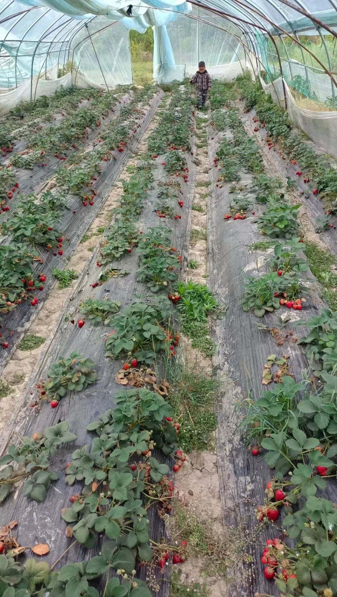 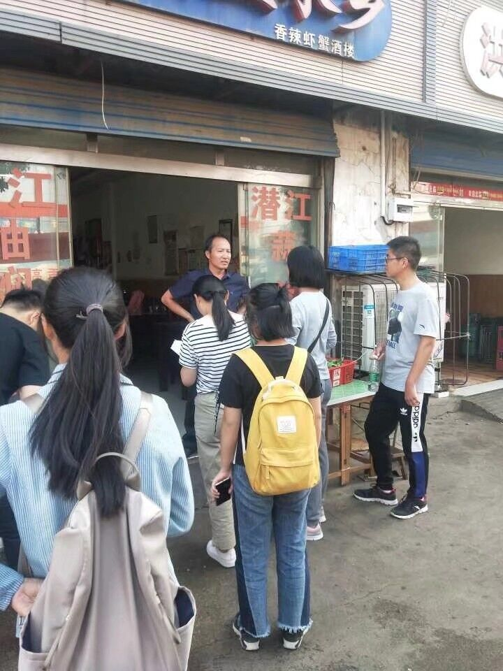我们的优势
麦秸行动有两大背景优势，一是具有成熟的志愿服务基地资源。麦秸行动团队在武汉市青菱社区、 黄家湖社区建立了服务基地，开展支教活动，并与青菱社区签订志愿服务基地9年，麦秸行动以微尘行动为依托进行发展。 微尘开展至今已有12年，从刚刚起步到发展成熟，获得各界人士的认可和赞扬，2012年获第六届湖北青年志愿者优秀项目奖， 2013年在省文明办、共青团湖北省委、省志愿者协会联合举办的“志愿有沃 荆楚志愿达人会”青年志愿者系列评选中脱颖而出， 荣获湖北省十佳志愿公益项目，2015年获“长江日报—最武汉”大学生志愿者优秀项目评选第二名。 为麦秸行动提供了创新发展的基础和研究需要的大量资源。
二是麦秸行动具有成熟的技术和优质的服务。通过腾讯会议平台， 开展线上一对一辅导以及特色课程的创新，家长及小朋友反映良好，在技术和内容上完全具有可行性和创新性。 同时，与传统家教相比，麦秸行动有着巨大的优势。传统支教需要面对面进行， 遇到天气、身体、交通等原因造成诸多不便。而麦秸远程直播教学打破了这一局限，让老师足不出户， 就可以给天涯海角的学生进行授课。此外，与大批暑期前往偏远山区的大学生支教模式相比， 麦秸线上教学节省了大量的人力、资金，在时间的安排上也更灵活可控，减少不必要的浪费。
-
对当今状况的分析
乡村农业现状
据国家统计局调查显示，我国农村市场经济发展总体是呈现上升趋势， 但是仍然存在着很多问题，制约着我国农业的进一步发展。
首先，我国农业产业化结构和生产力受到制约。产业结构化过于单一，以种植业为主， 且种植规模小，土地利用率非常低。加之大部分农村发展滞后，小农经济生产模式依然大量存在， 且大多数劳动者文化水平不高，对于现代化的生产工具及生产技术还不是了解，导致产量并不理想。
其次，农业与科技的融合度不够、农业专业技术人才匮乏。科技的出现让整个农村农业高速成长起来， 提高了劳动效率，节约了人力成本，为农业增产增值等等，这些都是科技带来的高效益高发展， 但是还是存在着些许不足。在农村农业科技建设方面，农业科学研究和技术推广存在很大的问题， 农学研究的时间成本高，周期长，存在着很大的资金问题；再者就是农学技术推广力度不够， 大部分人对农学研究存在一定的心里排斥，且基础设施设备不够先进，导致科研项目不能持续稳定的进行。 在农业技术推行方面的机制体系不够健全，很多老百姓不愿意相信这样的技术，觉得这些都是天方夜谭， 且老百姓大多要求成效快收益高的方法，这与科技研究的内容不符，存在着较大的分歧。科学技术研究注重的是实验， 农村老百姓看重的是结果，大部分农业技术科学研究停留在理论基础，没有进行实质性的成果研究，农业和科技的融合度不够， 所以在科技与农业共同发展上依旧任重道远。
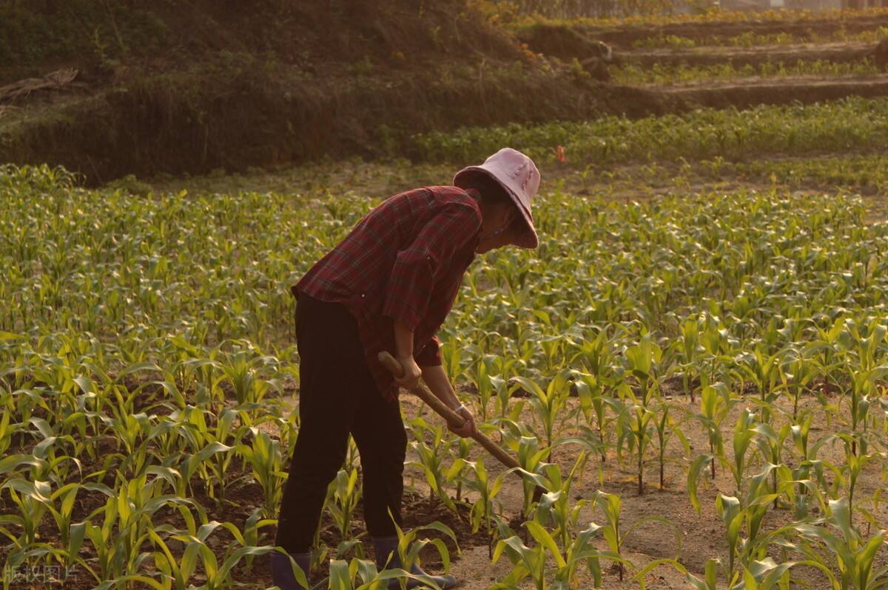 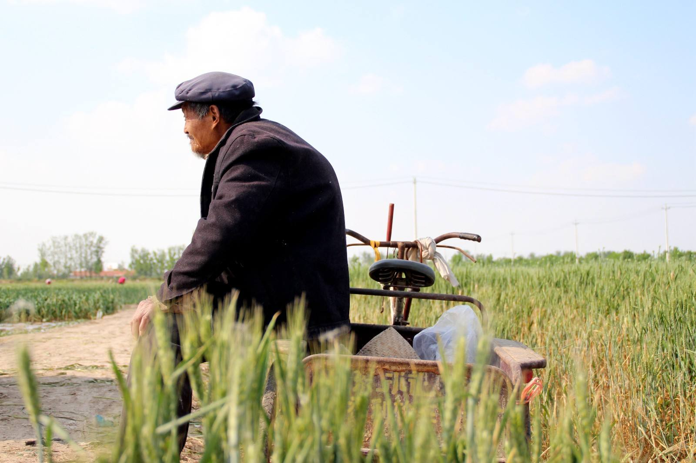 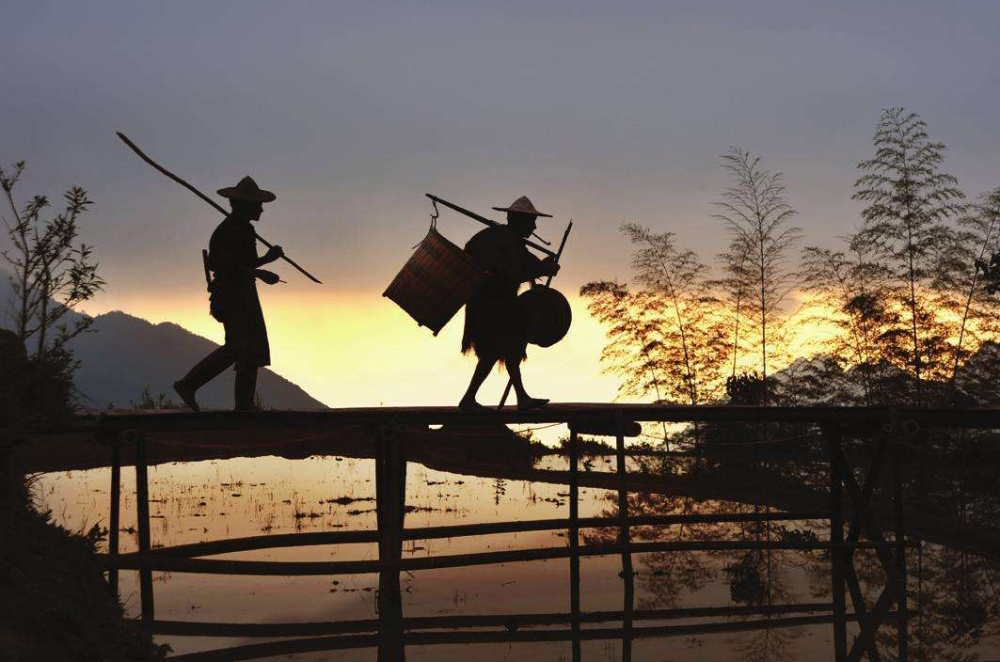中小学生劳动现状
首先，中小学生对劳动的认识还不够清晰，而且这不是个例，是部分学生都会存在的问题。 因为部分的学生都觉得劳动只包括体力劳动，而脑力劳动则不包括在内，认为“劳动”与“干活 ”这两个概念是画等号的 。 其次，有部分中小学生觉得在劳动过程中也能学到一些知识，这也是一个学习的过程，但仍然有小部分的中小学生觉得 劳动教育与普通的智育是呈现一种对立状态的，因此进行劳动教育就是在耽误自己学习的时间，因而始终持有一种厌恶 和规避的态度。一些中小学生在具备了一些方面的劳动技能后，更加认为接受劳动教育是在耽误时间的、无意义的一件 事情。最后，最需要进行矫正的一种认知是觉得职业是有高低贵贱之分的，部分中小学生以将来成为一名体力劳动者为耻。 这些错误的认知不利于劳动教育在农村中小学的开展，也不利于核心素养的落实与发展。
实施农村教育的途径是要以相关的教育目标为依据的，当下农村中小学在制定劳动教育的目标时存在多种弊端， 这也导致了学校缺乏统一的教育途径。首先，劳动教育是由许许多多个不同的板块组成的 ，但是部分中小学未能够合理地、 科学地对这些板块进行组合，也就是不能够处理好在劳动教育中的整体与部分的关系。 其次，部分中小学缺乏完整的劳动教育的配套设施，这也导致劳动教育的开展受阻，教育效果差， 甚至会导致劳动教育在中小学中流于形式。
改进行动
麦秸行动初期，团队将在武汉科技大学、青菱社区等地，开展双向教育创新模式公益讲座， 开展前期将依托腾讯会议对志愿者及参与农人进行软件使用培训以及授课彩排；活动中期，由参与农人自行制定授课内容，本团队招募并培训大学生志愿者， 开展支教活动，我们将通过线上途径进行实时跟进；后期收集各志愿者活动心得以及受众家长、小朋友及参与农人反馈， 及时总结，解决活动开展中出现的问题，不断完善活动机制，拓宽活动开展地点范围。
在进行线上支教活动的同时，麦秸开展了实践作品征集活动。通过收集参与活动的中小学生的实践作品，并将他们的学习成果与他们的参与活动的感想收集制作微信推文， 上传至武科大理学院青年志愿者服务队微信公众号，利用公众号的传播力展现“双向教育”的成果，对活动进行宣传推广，吸引更多大学生志愿者、中小学生以及相关农人参与麦秸行动。 同时我们还将开展“最棒实践作品”票选，号召全校师生对中小学生实践作业进行投票，对得票最高者，授予学期“最棒小农人”奖杯，激发中小学生学习和参与活动的热情。
以下是部分中小学生的实践作品：
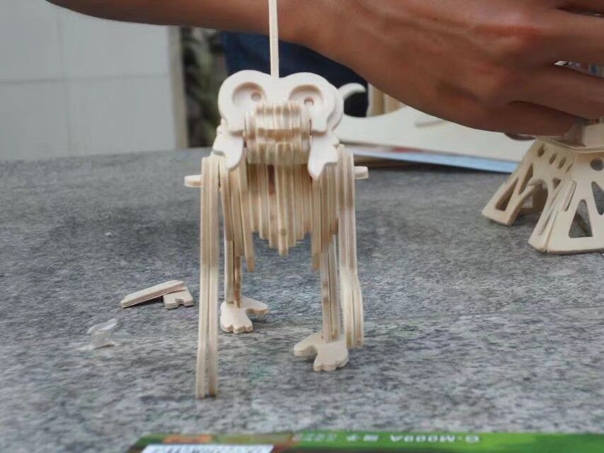 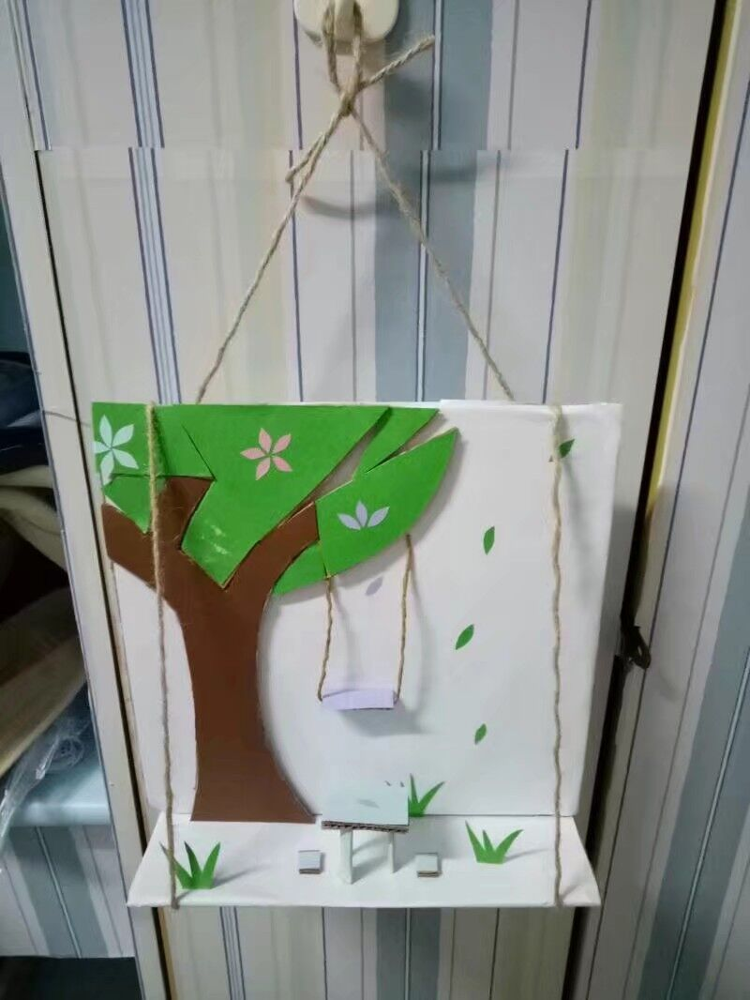 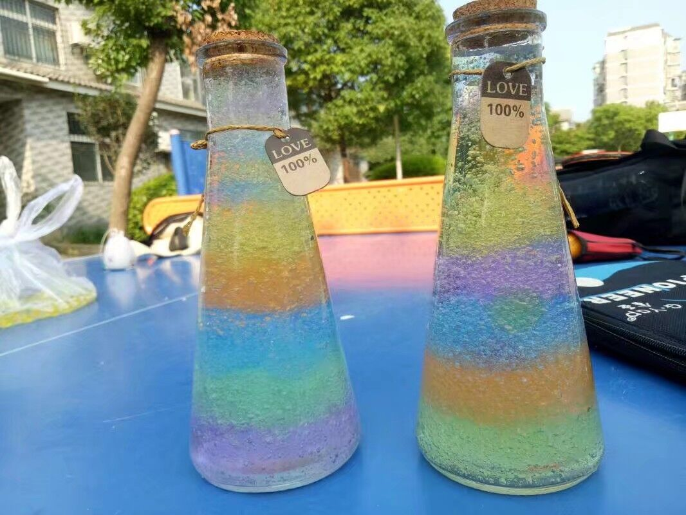 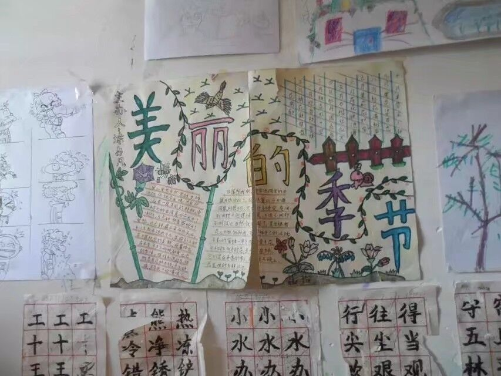 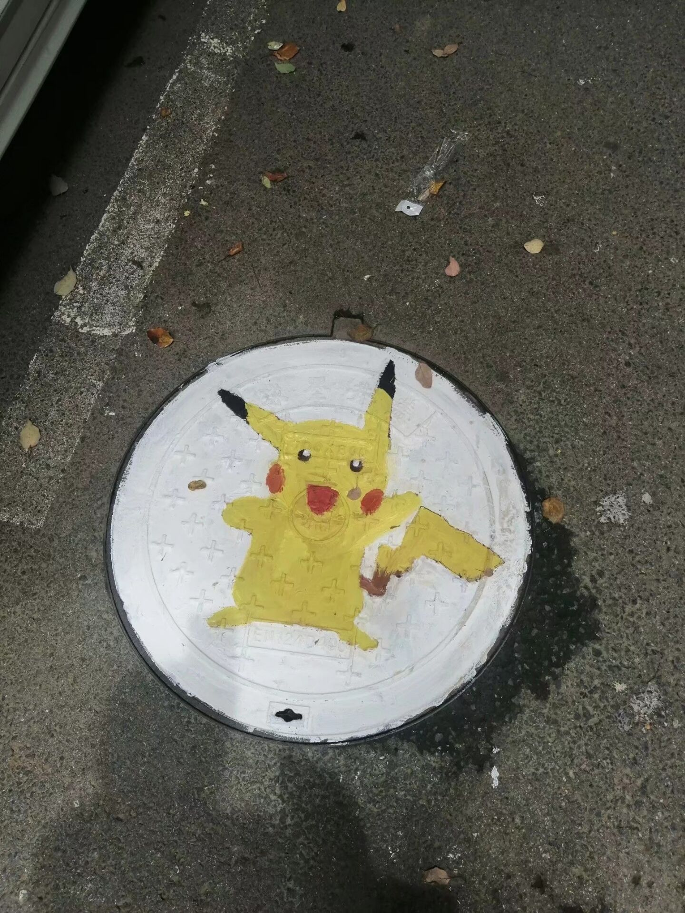 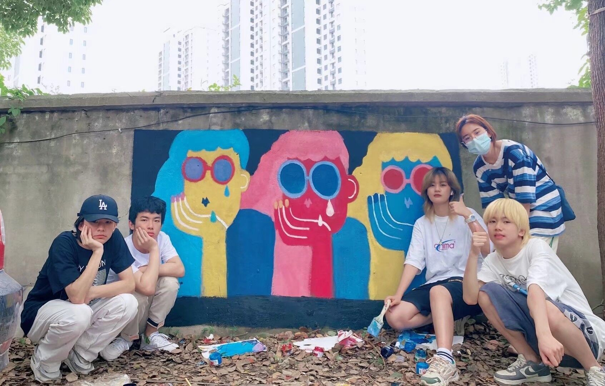 -
对于中小学生
1、有趣文化的传承；
2、家庭间的沟通问题，潜意识里，中小学生发现受忽视人群的博学闪光点，对于认识世界方面的思想提升有一定影响， 同时以此为话题展开与家长聊天，从共同话题入手，有利于解决教育问题中亲子沟通问题；
3、通过实际现象提高部分学科的兴趣点及理解力（部分例如生物类学科也可有所提高）；
4 、当中小学生开始倾听农民的故事、老人的故事，无形中对农村产生新看法，作为未来建设者，此中社会效益有待时间检验；
5、中小学生通过此项活动可以获得劳动技能和劳动知识，符合《义务教育劳动课程标准（2022年版）》的要求。
对于农民
1、增强成就感与生活丰富度；
2、他们可以向中小学生询问，咨询例如电子产品的使用，兴趣爱好等，对于与儿女等后代沟通有所帮助；
3、获取信息的途径更为广泛，提高政策国民参与度感；
4、与小朋友相处使他们增强陪伴感，有利于缓解农村典型空巢老人问题。
对于志愿者
1、麦秸行动联合机构给志愿者提供锻炼的平台，使志愿者日后受益匪浅的主持技能得到锻炼，对日渐流行的摄影、 软件等设备甚至新时代利民政策有了更深了解，更锻炼了志愿者的沟通能力、组织能力、授课备案与实操能力。
2、参与麦秸行动的志愿者有更真切认识到当代乡村实际发展与风土人情，深刻感受不同于城际的自然风光，学习到中国最广大群体的智慧。
3、志愿者不仅是城乡交流间的重要参与者，更是城乡交流的促进者。当志愿者耐心引导农民与城市的中小学生之间的理解与交流时， 他们无形中为两代人、两区人带去了不同程度的陪伴与了解，获得促进新时代下一代青年助力乡村振兴的芽，获得帮助某个家庭气氛调和剂的暖称， 此上是志愿者们能牢记许久的心灵收获。
-
志愿者招募要求
在志愿者素质要求上以上，志愿者不仅是农民与中小学生间教学的主持人，更是城乡文化交流间的沟通者， 在有序组织线上课程开展时使参与方保持较高学习积极性、有较好体验的同时，展现新时代青年的风貌； 同时，志愿者也会参与向农民普及符合新时代信息发展需求的电子产品简单操作以及与农民生活息息相关的利民政策。因此，要求志愿者具有极强的临场组织与应变能力；同时，还需对时事有一定了解，可将政策简单化阐述；最重要的是始终保持热烈、尊重的素养。
在志愿者数量上也有一定需求。对于麦秸行动的线上交流活动，农民老师的课堂上至少应配备一名主持人以及一名机动人员，保证课堂积极性以及双方交流顺畅，也保证后期实践作品的指导不缺席。同时，在志愿者教授农民的课程中，我们采取一对一耐心教学。 对于不同年龄段的农民，又需要精确解决需求的教学方式与内容。因此单次活动初期将招募近80人志愿者，后经层层筛选约50人参与正式活动。
志愿者招募方法
麦秸行动的志愿者主要从武汉科技大学在读学子中进行选拔，在招募志愿者时会对志愿者的品行进行要求和筛查，并针对课程及农民的需求招募特定的志愿者，招募完成后我们会对志愿者进行集中培训
志愿者筛查和培训
活动以一周为周期，每周从武汉科技大学全体学生中招募50-60名志愿者，招募完成后进一步筛选，采取综合指标， 对志愿者素养、能力进行评级，其中对不同职能的志愿者添加更具针对性的评定方向。例如，充当主持人的志愿者对思维敏捷度、 性格活跃性有偏重考量；对于教授农民新时代简单技能与普及利民政策的志愿者，偏重考量政治正确性、了解度。评判人为社区团支部负责人、青队骨干管理成员等， 进行多维度综合考量，做到公平公正公开。待志愿者人选确认后，总体将进行志愿者基本素质与规章制度讲演，以确保志愿者展现新时代青年良好风貌。
前期对于整体志愿者，双向教育将通过线上宣讲强调志愿者礼貌与尊重问题，明确活动规章制度，并向志愿者们普及当下农村的风土人情及一定缺乏， 中小学生的心理调查数据及农民心理偏向，前期基本培训后将进行整体测试，主要考核礼貌用语与心理交流，卷面分数达80分以上者合格。 后期将志愿者根据职能分块，一方面按参与时间分为长期志愿者与短期志愿者，长期志愿者要求掌握活动各个环节基本操作与流程， 短期志愿者要求根据报名负责的不同版块进行单方面精确培训；另一方面按职能分块，例如：负责主持的志愿者参与主持技能培训课堂， 对志愿者的礼貌用语、流程速记等展开培训；担任机动人员的志愿者参与设备使用培训课堂，保证志愿活动的顺畅进行；担任教师的志愿者 则参与政策正确认识、高新基础简单化培训课程，保证农民获得良好活动体验。